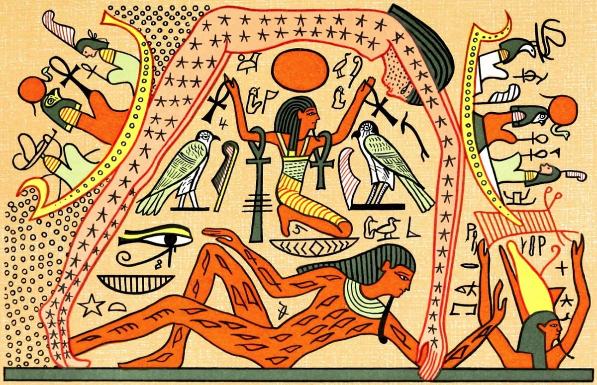
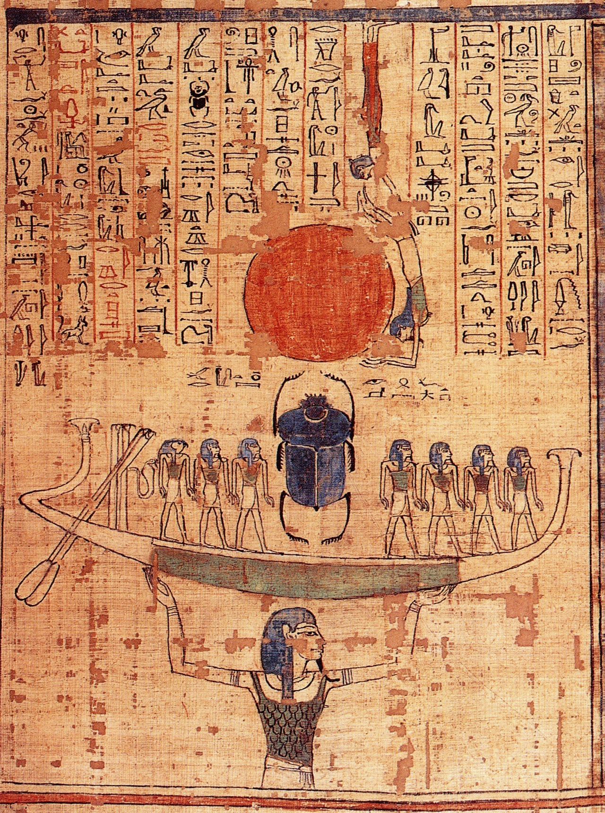

САМЫЕ ИЗВЕСТНЫЕ МИФЫ ДРЕВНЕГО ЕГИПТА

Когда-то очень давно не было ничего, кроме громадного океана Хаоса — Нун. Но свершилось чудо и из воды явился первый бог Атум. Он делает холм, и садится на него, раздумывая о сотворении мира. Атум создает бога ветра — Шу и богиню дождя и воды — Тефнут, что смогла бы управлять океаном. Но в темноте, которая тогда властвовала во Вселенной, он теряет своих детей. В надежде отыскать пропажу Атум вырывает свой глаз и отправляет его в глубины Нуна. Не дождавшись возвращения своего ока, бог делает себе другое.
Через время глаз Атума возвращается с пропавшими детьми, но,увидев, что произошло, он разгневался на своего хозяина и превратился в кобру, желая отомстить. Но Атум просто взял ядовитую змею и расположил у себя во лбу, чтобы она созерцала красоту созданного им мира. С того момента все фараоны носят змея-урея у себя на короне. Потом из воды появился белый лотос, из цветка вышел Ра. Солнечный бог осветил темный мир, а когда увидел Атума, Шу и Тефнут, у него покатились слезы радости. После падения на землю слезинки превратились в людей.
- Царствование Осириса и заговор Сета

Нут за пять дней, выигранных Тотом у Луны, рожает пять детей. Самым первым был Осирис-главный властитель, а вслед за ним рождается его брат Гор. Третьим же раньше положенного срока из бока богини неба появляется злобный Сет — бог войн, природных катастроф и пустыни. У него была звериная голова и страшные красноватые глаза и волосы. Четвертой Нут родила Исиду — богиню любви и семьи, полюбившую своего супруга и брата Осириса еще до рождения. Последней у матери родилась Нефтида — покровительница душ загробного мира, ставшая женой Сета.
На земном престоле воссел Осирис. В то время жители Египта были варварами, но Осирис вместе с Тотом обучили людей письменности, языкам, строительству, искусству и различным ремеслам. При правлении мудрого бога наступил Золотой век. И тогда Осирис пошел просвещать население других земель, оставив вместо себя на троне жену Исиду. Богиня при помощи Тота дала людям магию, медицину и целительство, передав женщинам знания о семейной заботе и ведении хозяйства.
Позже Осирис вернулся, за это время Сет тайно полюбил его супругу Исиду и желал убить брата, чтобы восседать на престоле. Бог пустынь организует заговор против Осириса, и берет себе в помощники 72 демона, проявляющих неприязнь к царю. Они устраивают пир, на котором обманным путем запирают Осириса в специально изготовленный ящик и бросают его в быстрые воды реки.

Анубис – древнеегипетский бог, связанный с кладбищами, могилами, мумификацией умерших. Он сопровождает покойников в загробный мир и определяет их посмертную участь, взвешивая сердца во время суда Осириса. До убийства своего брата злобным Сетом, Нефтида воспылала любовью к Осирису. Она, желая разделить ложе с могущественным богом, пришла к нему ночью в виде супруги Исиды. Позже от данной пары на свет появляется бог Анубис- защитник душ умерших. Анубис был защитником могил и кладбищ. В египетских текстах к его имени прилагается несколько эпитетов, указывающих на эту роль. Один из них – «Хентиментиу» («первый из западных», «владыка обитателей Запада»). Смысл этого имени объясняется тем, что мертвых обычно погребали на западном берегу Нила. Другие эпитеты: «Сидящий на своей горе» (тепу-джу-эф) – неусыпный страж наверху могилы; «Владыка священной земли» (неб-та-джесер) – бог пустынного некрополя.
Изменив Сету, Нефтида опасается его мести и убийства маленького Анубиса. Тогда богиня обманывает своего мужа и уверяет, что это именно его ребенок.
В другом варианте этого мифа, Нефтида бросает малыша сразу после рождения. Анубиса вырастила Исида, заручившись помощью собак.

Было время, когда боги жили на земле среди людей, а Ра был фараоном и в царстве богов, и в загробном мире. Но со временем он стал дряхлым и слабым, и не одни боги решили воспользоваться этим. Люди тоже заметили слабость Ра и объединились против него. Но Ра знал о заговоре против него и созвал богов на совет, чтобы обсудить, как подавить восстание. Собрание проходило тайно, чтобы люди не узнали, что их замысел раскрыт. Решение было единогласным, по совету бога Нуна: его сын Ра должен оставаться на троне и послать к людям свой глаз в форме богини Сехмет, чтобы покарать их.
Для этой цели была выбрана Хатхор, и после превращения в злобную львицу Сехмет она отправилась к людям, чтобы начать кровопролитную бойню.
Ра увидел бесчинства Сехмет и решил спасти людей от окончательной гибели. Он даёт приказ некоему мельнику в Гелиополе размолоть ячмень для пива. Подкрашенное охрой (или красным гематитом) пиво, похожее на кровь, ночью разлили по земле. Утром пришла кровожадная богиня, стала пить это пиво и опьянела. Люди были спасены, и с тех пор богине приносили в жертву пиво.
Настолько всё это огорчило Ра, что он решил уйти из мира. Он забрался на спину Нут, превратившейся в корову, и она унесла его в небо. Другие боги схватились за её живот, и превратились на пути к небу в звёзды. С тех пор небо с землёй разделены, как и боги с людьми.
Похожая история «Календарь о счастливых и несчастливых днях» с участием Хатхор, Сехмет, Уаджит и Ра встречается на Каирском папирусе и касается затмения переменной звезды Алголь.
- Бог Луны и мудрости Тот и его жена Сешет
Тот (Джхути) — один из древнейших египетских богов. В Додинастическую эпоху он, как божество Луны, идентифицировался с левым глазом Хора-сокола. Позднее Тот стал изображаться в облике человека с головой ибиса, своей священной птицы; реже — в облике павиана (кииокефала) и совсем редко — в облике человека в сложном головном уборе, состоящем из бычьих рогов, солнечного диска с уреем в виде головы ибиса, клафта (немеса) — полосатого платка с двумя фалдами, лежащими па плечах и короны "атеф".
Тот — исчислитель времени, поэтому он часто изображается с символом владычества над временем — пальмовой ветвью — в руке. Он — писец Ра, посыльный богов, покровитель знаний, магии и медицины; ему известны все волшебные слова и чудодейственные заклинания, которые существуют в мире земном и потустороннем. Тот составил свод законов Верхнего и Нижнего Египта; он — непременный участник любого суда. В Загробном Царстве на Суде Осириса Тот записывает приговоры Суда.
Серебряная лодка Тота — Луна — перевозит души умерших через ночное небо в потусторонний мир — за горизонт.
Жена Тота — богиня Сешет, покровительница письменности и геометрии. В ведении этой богини находится священное Небесное Дерево — Дерево Ишед. Когда на земле рождается новый фараон и когда он восходит на престол, Сешет записывает на листьях Дерева имя нового владыки и тем самым дарует фараону бессмертие. На листьях Дерева записываются также все исторические события, которые произошли в прошлом и которым суждено произойти в будущем.
Изображается Сешет в виде женщины в головном уборе, состоящем из семиконечной звезды и перьев (значение этого символа неизвестно), или в короне из папирусных листьев; иногда она бывает одета в шкуру леопарда. В руках богиня, как правило, держит пальмовую ветвь или письменные приспособления — дощечку с красками и тростинки.